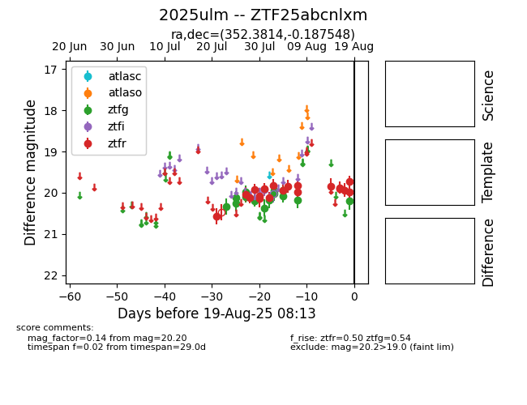

Target 2025ulm at 2025-08-19 08:13, see:
FINK: fink-portal.org/2025ulm
Lasair: lasair-ztf.lsst.ac.uk/objects/2025ulm
ALeRCE: alerce.online/object/2025ulm
TNS: wis-tns.org/object/2025ulm
YSE: ziggy.ucolick.org/yse/transient_detail/2025ulm
alt names
ZTF25abcnlxm (ztf,fink)
2025ulm (tns,yse)
coordinates:
equatorial (ra, dec) = (352.3814,-0.18755)
galactic (l, b) = (83.4222,-56.64024)
photometry
last ztfg=20.20, ztfr=19.72
14 ztfg, 19 ztfr detections
